Developed by ChanRT | Fork me at GitHub
Featured
Special Relativity

Find out what Einstein's 1905 brain-child is about. Make your vehicle move as fast as you want (but within physical limits) and view Time dilation, Length contraction and Relativistic Doppler Effect in action.
Maze Generation

Ever wondered how maze generation algorithms work? This simulation encompasses three maze generation algorithms (as of now). Also found brief description of the step-by-step working of these algorithm, along with their pros and cons.
Flocking Behaviour

Can a simple set of rules give rise to complex behaviour? This question is answered beautifully by the classic Flocking simulation, first formulated by Craig Reynolds in 1987. Vary all the parameters and view how the simulation changes! Learn how it works behind the hood.
Trigonometric Functions
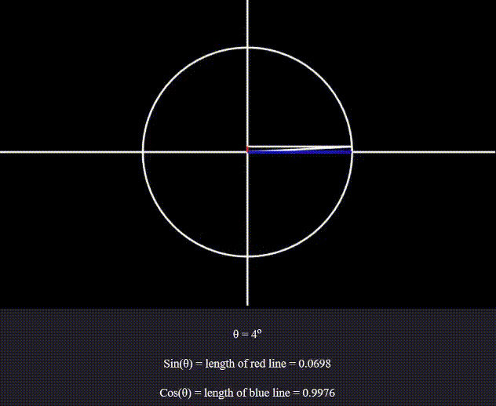
Does trigonometry still bring in the sweats? Or do you want to intuitively understand them? Whatever be the case, this interactive simulation provides a highly intuitive and visual understanding of all six Trigonometric functions, their properties and identities.
Mandelbrot Fractal

The Mandelbrot Fractal ought to erase any doubts about the beauty of Math. View a plethora of gorgeous, self-repeating patterns obtained from iterating a simple operation! Zoom in and explore the beauutiful sights. Learn how it comes about.
Lorenz System
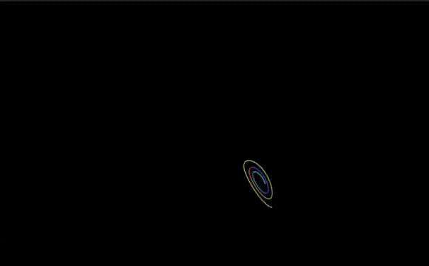
Ever come across the term "Butterfly Effect" in the context of chaos? It is generated by the Lorenz system of equations. Vary the parameters a little and see the trajectory change a lot! Come across the set of equations that generate these patterns.
Spring Motion
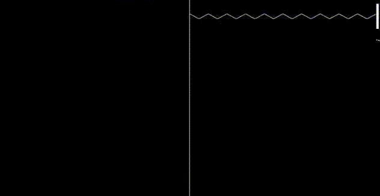
Springs: the simplest non-linear physical system whose working is intuituvely obvious. Vary all parameters, from spring constant to dispersion! View damped oscillations in action!
Bezier Curves

Computers use Bezier curve to render all text based elements. Further, they are widely used in designing and computer graphics. Design your own curves using this simulation! Use as many control points as you wish!
Reaction Diffusion System

A complex spatio-temporal model known to generate beautiful and intricate patterns! Reaction Diffusion systems have various uses in chemistry, physics, biology and ecology. This simulation allows you to draw on the canvas and watch both reaction and diffusion in action!
Conway's Game of Life

Let us ask the same question again: Can a simple set of rules give rise to complex behaviour? Conway's Game of Life is also based on a simple set of rules, put forth by John Conway in 1960s. From simple patterns like Gliders, to self replicating entities and Turing complete computers have been devised in Conway's universe.
Planetary Motion
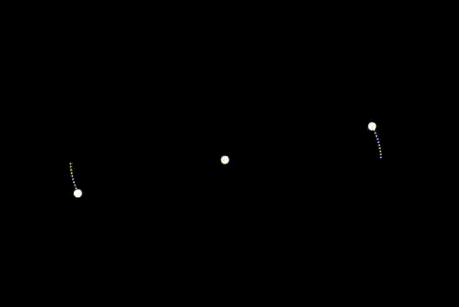
The Law of Universal Gravitation is aptly named. Put forth by Isaac Newton in 1687, it describes the motion of every massive particle in the universe. Play around this framework with as many bodies as you like!
Hilbert Curve
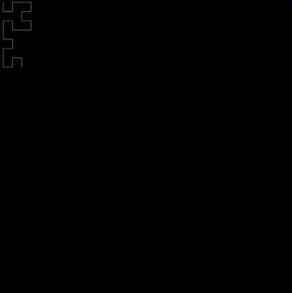
Is it possible to traverse through entire space with a line that doesn't cross itself? Hilbert curve is a 2D space filling curve that does the job. Increase the order to see the curve progressively fill up the entire space.
Travelling Salesman

A salesman wants to cover all places of interest through the shortest path possible and without visiting the same place twice. What path should he follow? This deceptively simple looking problem becomes extremely diffucult to solve as the number of places increases!
Projectile Motion
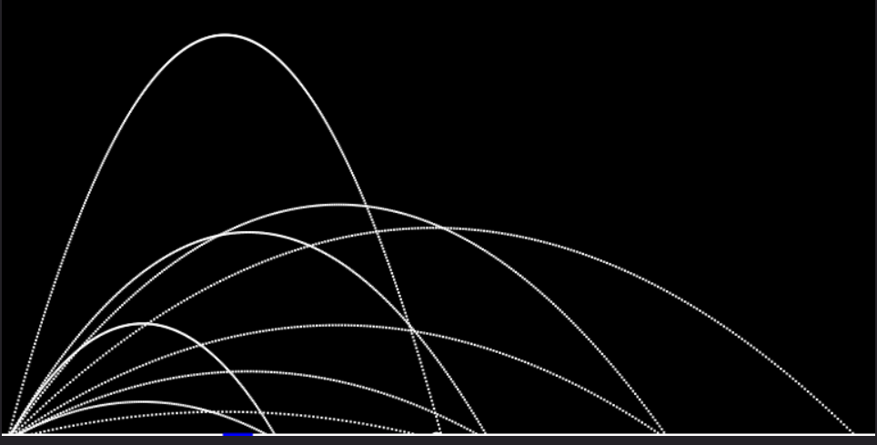
An everyday example of 2D motion. Explore projectile motion through the lens of a game. Try to hit the blue target with the correct initial velocity and angle!
Bell Curve and Random Walks

Explore the subtle relationship between unbiased random walks, binomial distribution, central limit theorem, Pascal's law and normal distribution. Simulate thousands of animals walking any distance you want and analyse their distribution!
Linear Momentum
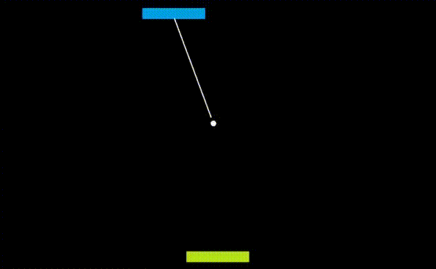
The conservation of linear momentum is a central topic in all avenues of Physics. Observe the computer AI crush you repeatedly at Pong by using this concept!
Heat Equation (1D)

Observe how temperature changes across an unevenly heated bar! This also serves as a simulation for the Diffusion equation, with heat being the diffused entity.
Linear Transformations
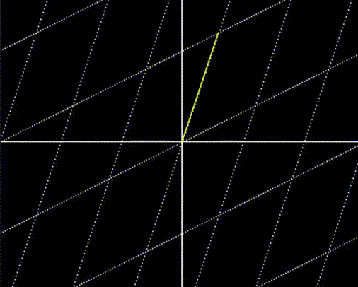
Play around with the operation that is central to linear algebra. The coordinate system is your playground. Scale, rotate and skew! Encounter rotation matrices and inverses. See what a matrix with zero determinant does to the linear space.
Stroboscopic Effect
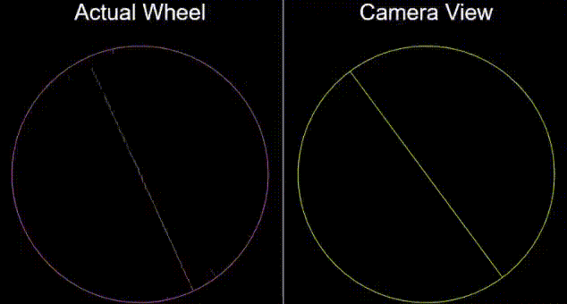
Haven't you observed weird stuff happening with rotating objects? A reversal of direction? Spokes rotating slower than they ought to? Or a flying helicopter with stationary rotors? This simulation explains and showcases this illusion.
Collatz Conjecture
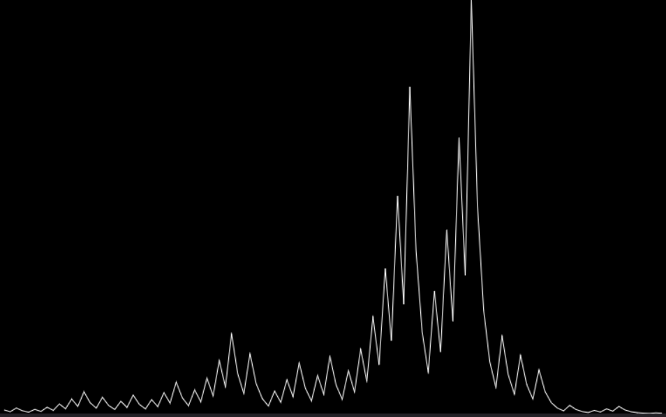
The statement of the Collatz Conjecture is simple enough to be universally understood. Yet its proof eludes the best of modern-day Mathematicians.
Conic Sections
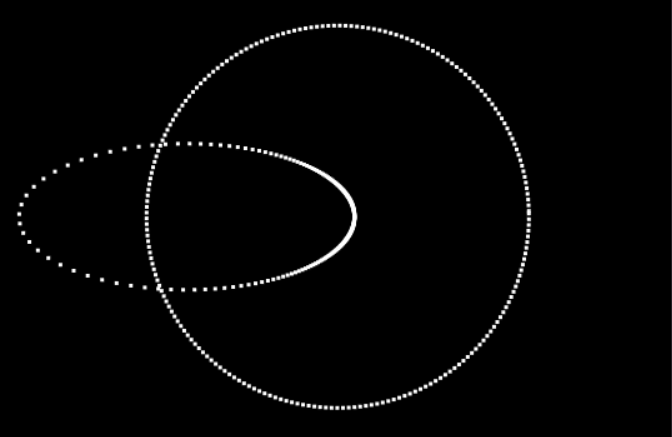